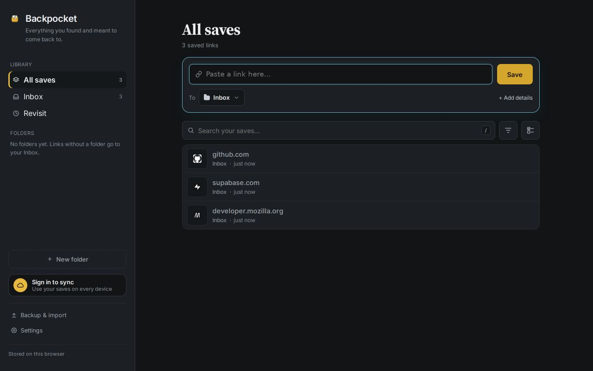
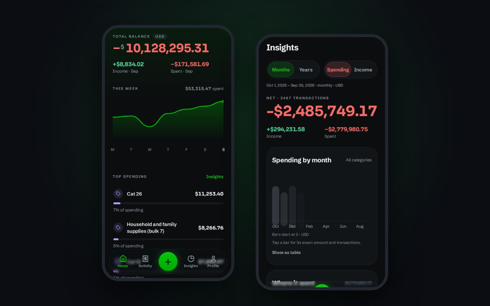
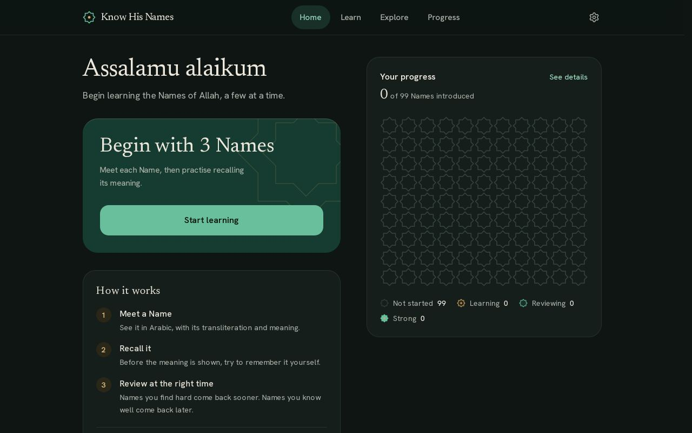
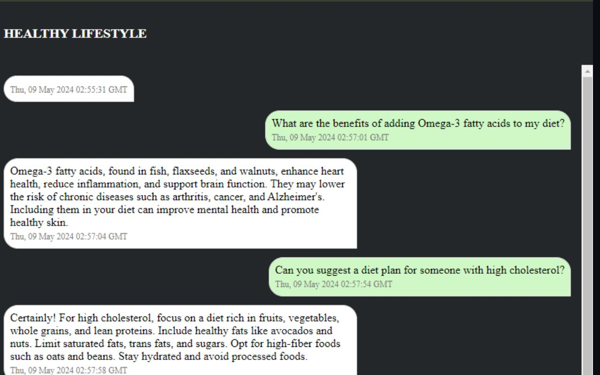
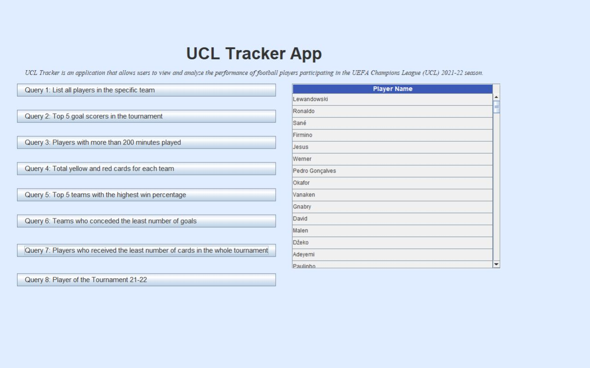

Mohammed Ali Khan
Full Stack Engineer Scrum Master Chicago-based
Event-driven healthcare systems and multi-agent AI, shipped.
01 Origin story
I build systems that don't drop the ball.
Full Stack Engineer and Scrum Master with 3+ years of experience building event-driven, cloud-native microservices for healthcare claims automation (X12 276/277, 277CA, 835) at Optum (UnitedHealth Group). I design and operate Java 21 / Spring Boot services and Python AI workflow systems on Azure, processing ~300K claims and ~180K Event Hub events daily across 10+ enterprise revenue-cycle customers, including Dignity Health.
Right now I'm building PAARC, a multi-agent AI service that automates medical insurance appeal processing end to end: LLM-based medical-record structuring, diagnosis reasoning, evidence collection, and appeal-letter drafting with LangGraph, Azure OpenAI, and Azure Document Intelligence behind FHIR R4-compliant APIs.
Proven record of cutting API latency 3x, standardizing failure recovery across services, and shipping production AI orchestration. I lead a 10-engineer Scrum team while keeping senior-level backend delivery.
- 3+years shipping
- ~300Kclaims processed
- ~180Kevents / day
- 3xfaster APIs, ~9s to <3s
- 10engineers led
- 4.0GPA, M.S. CS
Off the clock Soccer · Video games · Supercars · Robots · New phones & laptops · Fashion · Whatever's on my FYP
02 Career mode
Every season, a faster lap.
-
Full Stack Engineer
Optum (UnitedHealth Group)
Oct 2024 – Present
Build and operate the Falcon claim-status platform using Java 21 / Spring Boot 3.x microservices and Python AI services on Azure, automating healthcare claim status, denial, and appeals workflows for 10+ enterprise revenue-cycle customers including Dignity Health, Owensboro, and Northern Lights. Also building PAARC, a multi-agent AI service for automated medical insurance appeal processing.
PAARC Appeal Agents Python · FastAPI · LangGraph · Azure OpenAI · active development
- Build a multi-agent AI workflow service automating medical insurance appeal processing end to end: OCR and multi-stage LLM structuring of medical-record PDFs (Azure Document Intelligence + Azure OpenAI), diagnosis reasoning, admission-intent extraction, criterion-level clinical evidence collection, and LLM-drafted appeal letters (python-docx) exposed through HL7 FHIR R4-compliant REST APIs (Bundles carrying Task, Questionnaire, and QuestionnaireResponse resources) with Pydantic v2 contracts and MongoDB persistence.
- Implemented the evidence engine as a compiled LangGraph StateGraph executing a five-node pipeline per review criterion (cache check, evidence collection, ranking, group evaluation, persistence) with per-node RetryPolicy (3 attempts, exponential backoff) and conditional cache-skip routing, making repeat invocations fully idempotent with zero LLM cost.
- Engineered reliable at-least-once processing on session-enabled Azure Service Bus (one session per appeal guaranteeing ordered, single-worker delivery), extending AutoLockRenewer to a 90-minute ceiling for long-running medical-record workloads and building a dedicated DLQ reprocessor that re-enqueues failed messages with resume-mode metadata.
Show 5 more plays
- Designed workflow topology as declarative, frozen-dataclass graph specifications (NodeSpec / EdgeSpec / GraphSpec) with startup contract-coverage validation that catches topology and contract drift at deploy time rather than runtime; the 7-node appeal-preprocessing graph orchestrates five protocol-based AI agents covering structuring, reasoning, intent-to-admit, evidence, and letter drafting.
- Built workflow resume/skip logic that reconstructs completed activities from audit and checkpoint records on Service Bus redelivery and restores saved node state instead of re-executing, preventing expensive, non-idempotent duplicate LLM calls.
- Implemented atomic audit and checkpoint persistence through a decorator-based interceptor that writes both records in a single MongoDB multi-document transaction, including a state sanitizer that converts Python runtime objects (Pydantic models, sets) into Mongo-storable primitives.
- Established protocol-based agent interfaces (typing.Protocol) wired through a dependency-injection container, enabling agent implementations to be swapped (stub vs. production LLM) without modifying graph or service code and supporting clean test doubles under pytest.
- Enforced environment-aware security configuration: Managed Identity required and connection strings explicitly forbidden outside local environments, with startup-time ConfigurationError on violation converting credential misconfiguration from a runtime security hole into a deploy-time failure.
Falcon Claim-Status Platform Java 21 · Spring Boot 3.x · Azure
- Engineer 6+ event-driven microservices processing ~300K claims across REST and Azure Event Hub ingestion, sustaining ~180K events/day with blob-checkpointed, at-least-once consumers and replay-safe batch processing.
- Reduced latency on timeout-prone API endpoints from ~9s to under 3s by optimizing query patterns, data access paths, and request handling.
- Designed a shared Dead Letter Queue (DLQ) framework adopted by 6 services, standardizing failure capture with SHA-256 payload hashing for deduplication and asynchronous reprocessing APIs, cutting ad-hoc error-handling code by ~40% and eliminating missing-event data loss during downstream outages.
Show 9 more plays
- Built an EDI 277CA acknowledgement pipeline that validates and enriches claim data, generates X12 files with tenant/silo-specific naming, merges processed and unprocessed claim populations behind feature flags, and uploads to Azure Blob Storage via a retry-wrapped, back-pressure-controlled thread pool.
- Developed a follow-up scheduling service encoding multi-branch business rules (response-day sequencing, override dates, payer outage windows, timely-filing deadline clamping) with outbox-style publishing, idempotent batch upserts, and persisted scheduler state to prevent overlapping runs.
- Implemented an 835-remittance denial workflow on Project Reactor with bounded concurrency (15 concurrent events): a 3-stage deterministic claim-matching funnel (winnowing, payment selection, multi-key DB lookup), CARC/RARC denial categorization via cached parallel API calls, and MD5 signature-based deduplication with partition-pruned PostgreSQL queries.
- Delivered exactly-once-like processing on at-least-once infrastructure using PostgreSQL atomic upserts (INSERT ON CONFLICT), canonical event hashing, and transactional DB-write + event-publish boundaries; authored a conditioned JSONB batch-update path (jsonb_set + COALESCE) that prevents null-overwrite corruption of denial dispositions during republish scenarios.
- Built rule-driven workflow orchestration using Drools (DRL) and Velocity templates with strategy-pattern pre-processors and retry evaluators, enabling new payer pathways (IMN, UHC/REAL, OAI) without core code rewrites.
- Hardened Azure integration by wiring user-assigned managed identity, App Configuration, and Key Vault on Azure Container Apps (succeeding after prior DevOps and vendor-supported attempts failed) and implementing Azure AD token injection with connection validation and recycling for resilient Azure SQL access.
- Increased platform resilience with bounded concurrency controls, a dedicated Reactor Netty connection pool for shared WebClient usage (eliminating 502/503/504 pool-exhaustion symptoms), sentinel-driven Caffeine cache refresh via App Configuration, and startup warm-up checks for Event Hub, Blob, and DB dependencies.
- Delivered production observability end to end: comprehensive Splunk logging, business dashboards, OpenTelemetry/Splunk APM distributed tracing with MDC correlation IDs across reactive chains, and alerting that accelerates regression detection and triage.
- Serve as Scrum Master for a 10-engineer team: run sprint planning with directors and product owners, allocate work by capacity, unblock development and testing, and review PRs, while sustaining senior-level individual backend throughput on a biweekly deploy cadence with continuous security and CVE remediation.
-
Graduate Research Assistant
Northeastern Illinois University
Feb 2023 – May 2024
- Led data analysis across 40+ universities and 1,200+ healthcare facilities using Python, Qualtrics, and Excel for a nursing-program feasibility study that directly supported the establishment of NEIU's Nursing Department.
- Automated Illinois Board of Nursing survey workflows in Qualtrics, improving data-collection efficiency by 30%.
- Produced teacher-licensure compliance reporting in TK20 aligned to Illinois State Board of Education requirements, improving submission efficiency by 40%.
- Cleansed and standardized research datasets with Python and Excel, improving data accuracy by ~20%; maintained the college's Drupal website and designed event collateral in Photoshop/Canva.
-
Technical Support Roles
Northeastern Illinois University
Jan 2023 – Feb 2023
- Tutored students in Java, Python, and mathematics coursework and maintained lab and library computer systems; integrated TutorTrac scheduling software for the Learning Success Center, improving appointment-management efficiency by ~20%.
-
Junior Developer
Next Future IT
Oct 2020 – Oct 2021
- Built responsive, scalable web applications with HTML, CSS, JavaScript, and React.js, contributing to a 25% increase in user engagement and 10% lift in conversion rates.
- Implemented Jenkins-based CI and performance optimization, improving page load times by 25% and reducing bounce rate by 15%.
- Practiced Scrum/Kanban delivery, shortening development cycles by 20% and raising sprint velocity by 15%.
-
Master of Science in Computer Science
Northeastern Illinois University
May 2024
GPA 4.0.
03 The lookbook
The collection, season 2026.
-

Look 01 · Personal · Live
Backpocket
The graveyard of saved reels, finally sorted.
An offline-first PWA that catches reels, shorts and links from the Android share sheet, an iPhone Shortcut, or a bookmarklet. It strips tracking params to catch duplicates and syncs across devices. With optional Gemini AI it files each save on its own (only when it's ≥ 0.8 confident), searches by meaning with pgvector, and turns a folder into a step-by-step plan.
No account needed · AI rate limits as Postgres token buckets · deploy fails if a key leaks into the bundle
TypeScript · Vite · IndexedDB · Service Worker · Supabase · pgvector · Deno Edge Functions · Gemini · Vitest
-

Look 02 · Personal · Full stack
PennyWise
“Groceries over $50 last month” is a valid filter now.
A cash-management app where you type a question in plain English and Gemini turns it into a structured filter you can review and apply. Behind it is a Java 21 / Spring Boot API with multiple books, category budgets, .xlsx import and export, idempotency keys, and token-bucket rate limiting. The Expo app ships fixes over the air and tells you plainly when the free-tier server is waking up.
11 Flyway migrations · Testcontainers-tested · OTA updates via EAS
Java 21 · Spring Boot 3.5 · Spring Security · PostgreSQL · Flyway · Docker · Expo · React Native · TypeScript · Zustand · TanStack Query · Gemini
-
Look 03 · Optum · Work
PAARC Appeal Agents
Five AI agents, one appeal letter.
Multi-agent AI that automates medical insurance appeals: OCR, record structuring, diagnosis reasoning, evidence collection, and appeal-letter drafting behind FHIR R4 APIs.
5 agents · 7-node graph · $0 LLM cost on repeat runs
Python · FastAPI · LangGraph · Azure OpenAI · MongoDB
-

Look 04 · Personal · In scholar review
Know His Names
Spaced repetition, pointed at the 99 Names.
A local-first PWA for learning the 99 Names of Allah with active recall and FSRS scheduling. There's no account and no server database, it works offline, and your progress fills a mosaic of 99 eight-pointed stars. The content is schema-checked with Zod, so a bad entry fails the build.
FSRS scheduling · works offline · no accounts, no tracking
Next.js 16 · React 19 · TypeScript · Tailwind CSS 4 · ts-fsrs · Zod · IndexedDB · Vitest · Playwright
-
Look 05 · Optum · Work
Falcon Claim-Status Platform
~180K events a day, none dropped.
Event-driven microservices automating claim status, denial, and appeals workflows, with a shared DLQ framework and replay-safe processing.
Java 21 · Spring Boot 3 · Event Hubs · PostgreSQL · Reactor
-

Look 06 · Personal
Healthcare Assistant
GPT-4 Turbo, kept to nutrition only.
A React chat app with real-time Firestore chat rooms and Firebase sign-in. A Flask backend verifies Firebase ID tokens and prompts GPT-4 Turbo to answer only nutrition and diet questions, in 50 words.
React · Flask · OpenAI API · Firebase Auth · Firestore
Repo (opens in new tab) -

Look 07 · Academic
UCL Tracker 2022
The 2021–22 Champions League, one click per question.
A Java Swing desktop app that loads season data from Excel into MySQL with Apache POI, then answers eight questions, from top scorers and win percentages to Player of the Tournament.
Java · Swing · JDBC · MySQL · Apache POI
Repo (opens in new tab) -
Look 08 · Academic
Student E-Bridge
Office hours, as an Android app.
An Android app with student, faculty and admin roles. Students post questions, faculty answer them, and admins register users and subjects. Records live in Amazon SimpleDB and files in S3.
Java · Android SDK · AWS SimpleDB · Amazon S3
Repo (opens in new tab)
04 Loadout
Fully equipped.
AI & Workflow Orchestration
- LangGraph (StateGraph, RetryPolicy, subgraphs)
- LangChain
- Multi-Agent Systems
- Azure OpenAI / OpenAI SDK
- Azure Document Intelligence (OCR)
- Agentic Workflows
- Durable State Machines
- Checkpoint/Resume Orchestration
- LLM Document Pipelines
- Arize OTEL / OpenInference
Backend & Frameworks
- Spring Boot 3.x
- Spring Data JPA
- Hibernate
- Spring WebFlux
- Project Reactor
- Spring Security (JWT, OAuth2)
- Spring Retry
- Spring Cache (Caffeine)
- FastAPI
- Flask
- Uvicorn / Gunicorn
- Node.js
- Pydantic v2
- Drools
- Apache Velocity
Languages
- Java 21
- Python
- SQL
- JavaScript
- HTML5
- CSS3
- C++
- C#
Cloud (Azure-primary)
- Azure Event Hubs
- Azure Service Bus (sessions, DLQ)
- Azure Blob Storage
- Azure Container Apps
- Azure App Service
- Azure App Configuration
- Azure Key Vault
- Azure Managed Identity
- AWS (EC2, S3, Lambda)
- Docker
- Kubernetes
Data & Databases
- PostgreSQL (JSONB, partitioning, batch JDBC)
- MongoDB / Azure Cosmos DB
- Multi-document transactions
- Aggregation pipelines
- SQL Server / Azure SQL
- H2
- Liquibase
- Flyway
APIs & Integration
- REST
- GraphQL (Spring GraphQL)
- OpenAPI / Swagger
- Webhooks
- X12 EDI (276/277, 277CA, 835, 837)
- HL7 FHIR R4
- Event-Driven Architecture
- Dead-Letter Queues
Frontend & Mobile
- React
- React Native (Expo)
- Tailwind CSS
- Bootstrap
- jQuery
- Thymeleaf
DevOps & Observability
- GitHub Actions
- SonarQube
- JaCoCo
- Pytest
- Splunk (dashboards, alerts, APM)
- OpenTelemetry
- Logback / Logstash
- Git
- Postman
- Insomnia
- Docker Desktop
- Podman
05 Press start
Player 2, ready?
Open to conversations about backend, platform, and applied-AI roles. The fastest way to reach me is email.